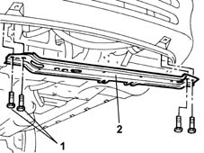
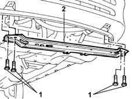

1088B32 engine cooling radiator support beam - r r
- Path
- Procedures > 10 ENGINE UNIT > 1088 ENGINE COOLING > 1088B ENGINE COOLING RADIATOR > 1088B32 engine cooling radiator support beam - r r
- Kind
- repair procedure (removal / refitting; the operation number is the code)
- Applies to
- all engines; all production periods
- Interactive page
- https://sloeber94.github.io/elrnDB-fMltpl/en/#/2891327
Applies to: engines: 1.6 16v; all production periods
 Removing
Removing
 Refitting
RefittingUndo the bolts securing the radiator to the upper support beam.
Secure the radiator to the body using cord or wire.
Raise the car.
1. Undo the bolts fixing the crossmember to the bodyshell.
2. Remove the engine radiator support beam.

Applies to: engines: 1.6 16v; all production periods
Refitting
RemovingFit the beam and tighten the bolts to the specified torque.
 | Fastening | Component | Ø | Value (daNm) |
|---|---|---|---|---|
- | Bolt | COOLANT RADIATOR SUPPORT BEAM | M8 | 3.5 |
Lower the lift.
Remove the cord or wire securing the radiator to the body.
Tighten the bolts securing the radiator to the upper beam.
Applies to: engines: 1.9 JTD 8V; all production periods
Removing
RefittingUndo the bolts securing the radiator to the upper support beam.
Secure the radiator to the body using cord or wire.
Raise the car.
1. Undo the bolts fixing the crossmember to the bodyshell.
2. Remove the engine radiator support beam.

Applies to: engines: 1.9 JTD 8V; all production periods
Refitting
RemovingFit the beam and tighten the bolts to the specified torque.
| Fastening | Component | Ø | Value (daNm) |
|---|---|---|---|---|
- | Bolt | COOLANT RADIATOR SUPPORT BEAM | M8 | 3.2 |
Lower the lift.
Remove the cord or wire securing the radiator to the body.
Tighten the bolts securing the radiator to the upper beam.